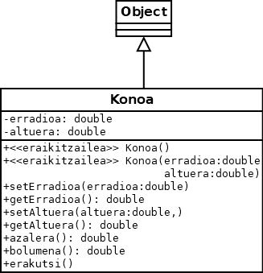

Programazioa > Objetuei bideratutako programazioaren oinarriak >
9. ariketa
Kono baten erradioa eta altuera sartu ondoren, kono honen azalera eta bolumena kalkulatzeko programa bat sortzea nahi da objetuei bideratutako programazioaren oinarriak aplikatuz.
Adibidea
Sartu konoaren erradioa: 4
Sartu konoaren altuera: 2
Azalera = 106,46
Bolumena = 33,51
Klase-diagrama
- Konoa

Kodea
- Konoa.java
- ProbaKonoa.java
- KonoBat.java